Before you level a sloped lot, build on a bluff or dam a canyon, you need numbers you can’t eyeball: how much earth a pad moves, where storm water goes, how much a basin holds. They drive most of the cost. These three studies compute all three from public 10 m USGS elevation, on my geometry engine and geospatial platform.
Delaunay TIN · C++ engineUSGS 3DEP 10 mPreliminary studies, not surveysHow it was built
9,160yd³Earth moved · a level pad
604kgalStorm runoff routed · 22 acres
44,457ac·ftReservoir · one 256-ft dam
Before any engineering: a building lot, a river bluff, and a dry canyon a dam could close. From up here you can’t read the earthwork, the drainage or the reservoir. Each study below works one of them out.
01 · Foothill lot · Fresno County
A level pad on a sloped lot.
A lot for sale in the foothills, on a slope. Before you make the offer you want one number: what does a level building pad here cost in dirt? How steep is it, how much has to be cut, filled or trucked out? You cannot eyeball it, and it is most of the grading bill.
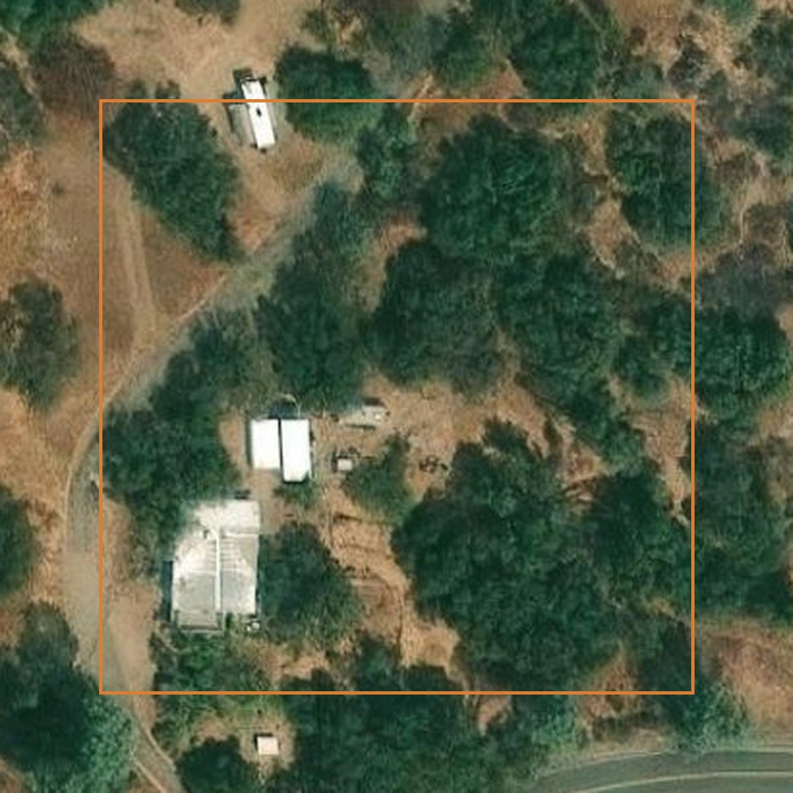
The site, from the map.
39ftFall across the lot
12.9%Steepest grade
2,089ftBalanced pad height
9,160yd³Earth moved
~0yd³Hauled off-site
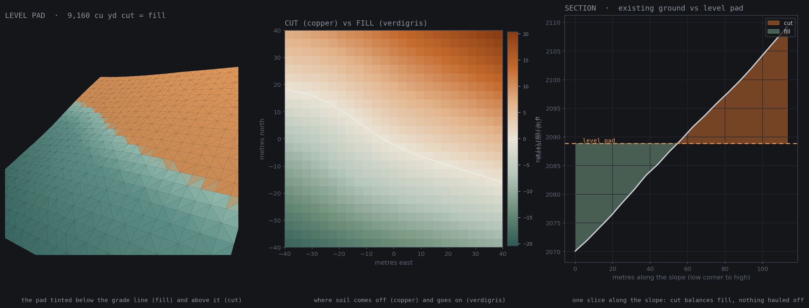
Grading to one level 80 × 80 m pad. The engine finds the height where the soil cut off the high side exactly fills the low side.
How to read it. Copper is soil cut off the high ground, verdigris is soil filled into the low ground. The two balance, so no dirt has to leave the site. The section at right runs from the low corner up to the high one.
A slow pass over the computed surface with the graded pad in place. Vertical exaggeration ×3.
The padCut the high side down and fill the low side up until it is level. At the balanced grade the dirt you remove matches the dirt you need.
The dirtAbout 9,160 cubic yards cut from the high side and placed on the low side. On a slope, trucking is where the money goes; here almost nothing leaves.
The waterOn the modeled surface, runoff moves southwest and collects at the low corner. Any drainage work would need field verification.
02 · West bluff · San Joaquin River rim · north Fresno
Where the rain runs on a bluff.
Your house sits near the rim of this bluff, or you are planning to build one here. Bluffs erode, and 95 feet below runs the San Joaquin. You need to know what every storm does to this ground: which way the rain sheds, where it gathers and cuts, and where it leaves the property.
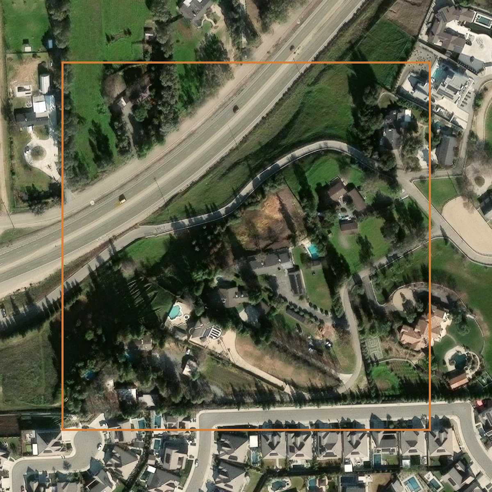
The site, from the map.
95ftFall down the bluff
39%Steepest grade
NWBluff faces
604kgalRunoff · 1-inch storm · 22.2 ac
WNWDrains to the river
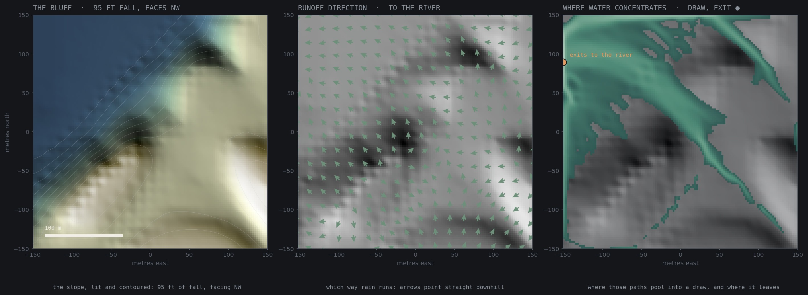
Where a one-inch storm goes: the bluff lit and contoured (left), the downhill direction at every point (middle), and where those paths pool into a draw and leave toward the river (right).
How to read it. The green arrows point downhill the way rain runs, the bright green is where those paths gather into a draw, and the dot marks where the water leaves toward the river. About 604,000 gallons run off the modeled slope per inch of rain, assuming zero infiltration: the worst case.
A storm crossing the modeled bluff: rain lands, gathers into the draws, pools where the ground allows, and drains toward the river. Illustrative routing, not calibrated hydrology. Vertical exaggeration ×6.5.
The slopeA steep northwest-facing bluff dropping 95 feet toward the San Joaquin, 39% at the steepest.
The runoffWater cannot be held on a 39% face. A one-inch storm sheds roughly 604,000 gallons off the modeled slope, all of it running downhill.
Where it goesIt gathers into a draw that cuts west-northwest down the bluff and exits toward the river. Anything built near the rim has to respect that draw.
03 · San Joaquin River gorge · Sierra Nevada
Dam a dry canyon. How much would it hold?
A regional screening might start with many candidate reservoir sites and incomplete information. This study asks one narrow question of one dry gorge with a single southern outlet: from public 10-metre elevation alone, what capacity and dam-height curve does the modeled surface give?
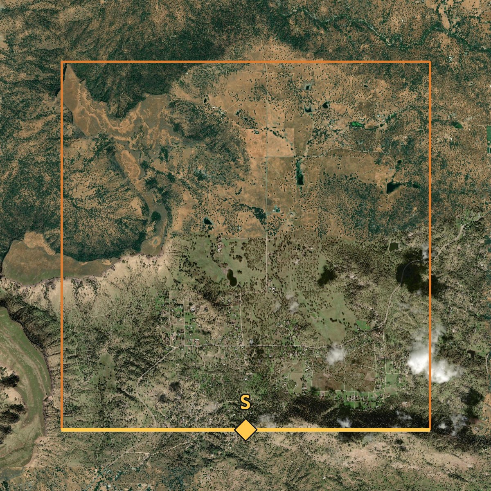
The site, from the map.
44,457ac·ftFull-pool capacity
256ftDam height
449acSurface at full pool
14.5B galWater impounded
0.9miReservoir reach
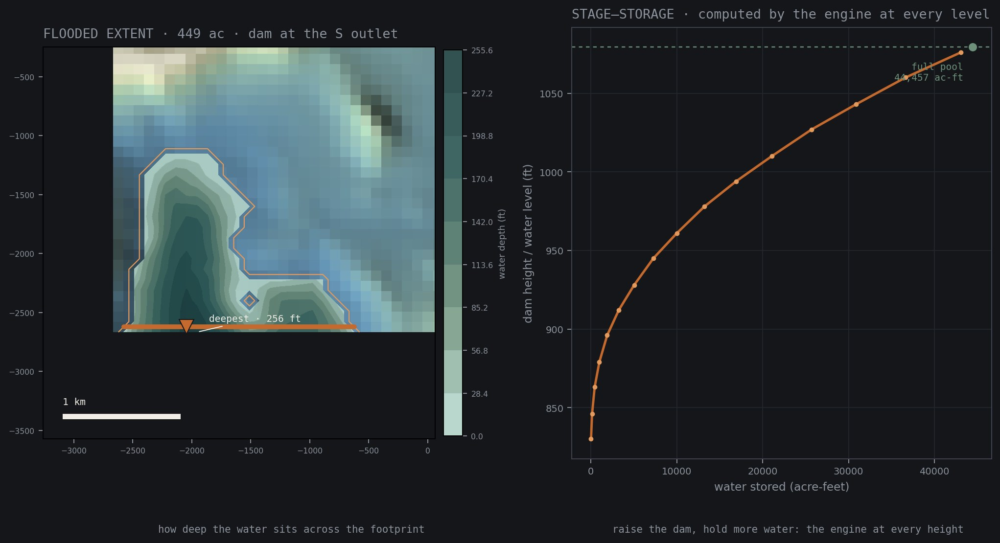
Full pool. The flooded footprint shaded by depth with the dam and deepest point marked (left), and the stage-storage curve at each modeled waterline (right). Capacity is integrated below the waterline from public 10-metre elevation.
How to read it. The orange wall is the dam, darker blue is deeper water, and the curve shows how much the reservoir holds as the dam is built taller. The reservoir is the flooded basin the engine computes, not a drawn shape.
Without the dam, the drainage runs out the gorge’s one outlet. With it, the dam drops into place and the reservoir fills behind it while the stream below runs dry. Vertical exaggeration ×3.4.
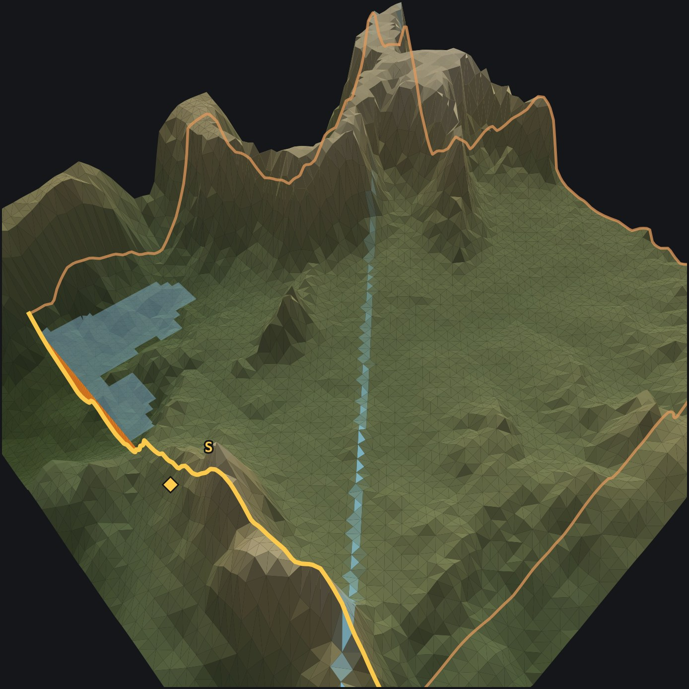
The canyon at full pool from the air, dam at the south outlet.
The basinA dry Sierra gorge that falls to a single narrow outlet on the south. Close that notch with a 256-foot dam and the canyon behind it becomes a reservoir, held on the other three sides by its own rim.
The capacityAt the selected full-pool elevation the model yields 44,457 acre-feet, about 14.5 billion gallons. The stage–storage curve gives the capacity at every waterline below that.
What it supportsA preliminary capacity and dam-height estimate for comparing sites. Not a design value: that needs surveyed elevation, calibrated hydrology and engineering review.
How a surface is built
From a map to a model, the same way every time.
Each study starts from the same three steps. Public USGS elevation is sampled across the site, the samples are triangulated into a continuous surface, and the earthwork, drainage and reservoir figures are read off that surface.
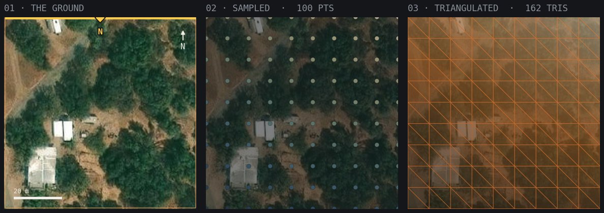
The lot. Boundary, 100 sampled points, 162 triangles.
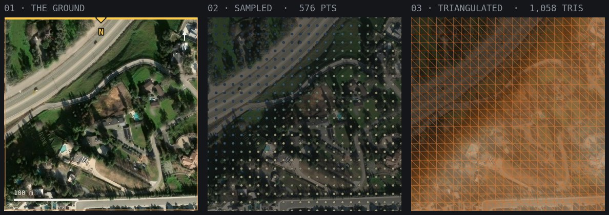
The bluff. 576 points, 1,058 triangles.
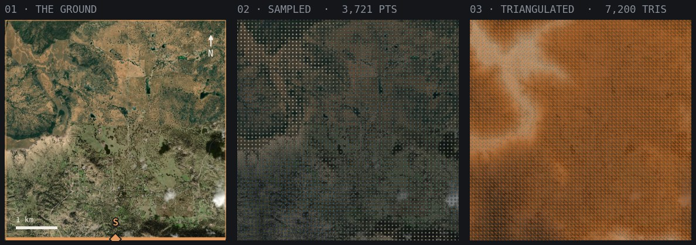
The gorge. 3,721 points, 7,200 triangles, exact to Euler’s formula.
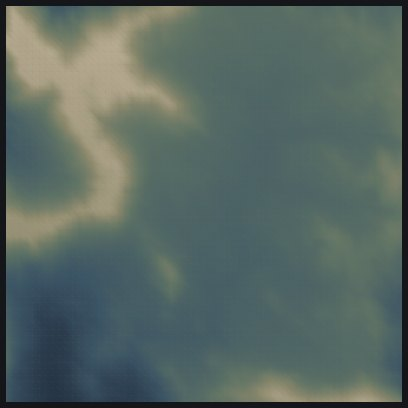
Coloured by height, 251–617 m.
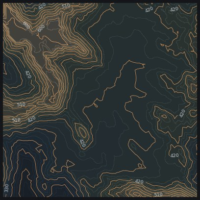
Contour lines.
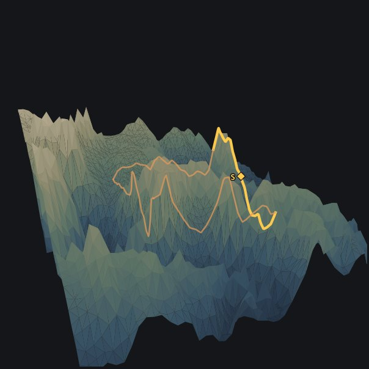
Lifted into 3-D, ×3.2 vertical.
01 · ElevationReal USGS 10-metre elevation, fetched in batches with per-batch ranges logged.
02 · SurfaceTriangulated into a TIN by a standard-library C++ engine; every mesh checks against Euler’s formula.
03 · AnalysisCut and fill balanced by bisection and confirmed in closed form; rainfall routed downhill neighbour to neighbour; capacity integrated below each waterline.
The engines behind it
Neither system was built for terrain.
The geometry engine began as hand-written primitives, polygon operations and an ear-clipping triangulator; Delaunay, Voronoi and terrain came later. The geospatial platform began as a county data pipeline. Together they turn public elevation into a surface, and a real parcel boundary into a study site.
Engine 01 · Geometry
Numbers in, numbers out.
A bare terminal run: 1,500 random points become 2,976 Delaunay triangles and the full Voronoi dual, validated, in 0.09 s. The terrain surfaces above are these same structures, built from elevation samples instead of random points.
The same approach on different material. Parcel boundaries come from Fresno County’s official GIS data, so either study can run on any parcel in the county from its address alone, or on any coordinate boundary where elevation exists.
Terminal output from the actual computations, for anyone who wants to check the work.
Elevation samples arriving, batch by batch (the bluff)
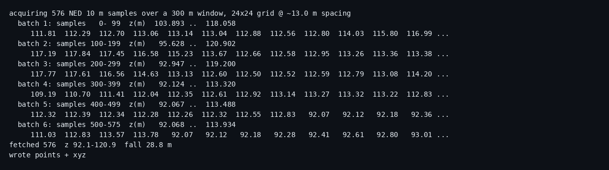
576 samples in six batches, with per-batch elevation ranges.3,721 samples triangulated into 7,200 triangles in 0.206 s (the canyon)
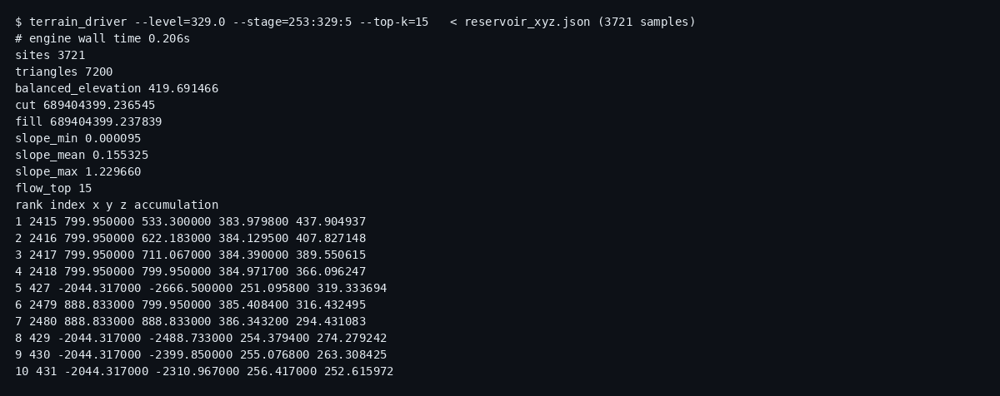
Slope statistics and the top flow-accumulation points, read off the mesh.Balancing the pad: 28 bisection trials, and the closed-form answer agrees
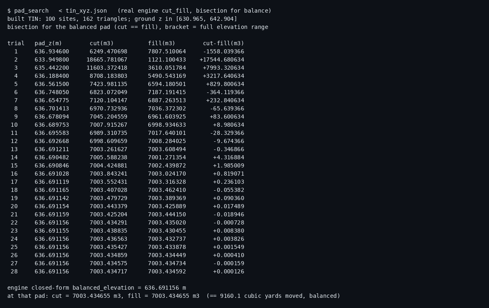
Cut minus fill narrowed to a 0.0001 m³ residual; the engine’s closed-form answer gives the same 9,160.1 yd³.The stage–storage sweep: 16 waterlines (the reservoir)
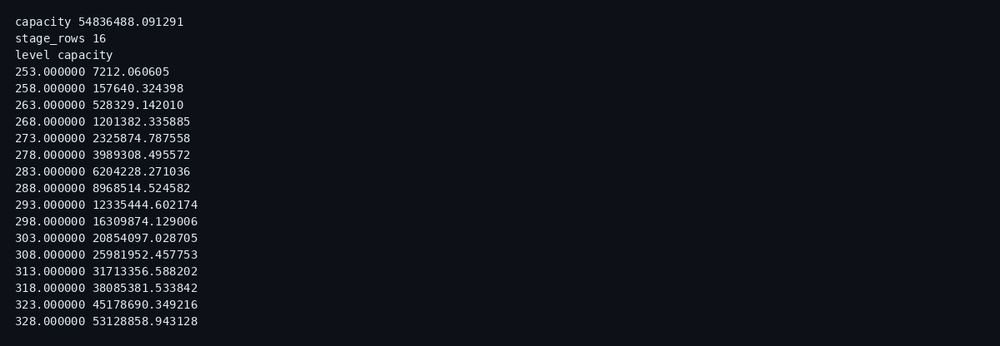
54,836,488 m³ at full pool, which is 44,457 acre-feet.One hand-written predicate: is a point on this segment?
Point twoMinus1 = p2 - p1;
Point thisMinus1 = *this - p1;
// scale epsilon to the problem size
double scale = max({1.0,
fabs(twoMinus1.get_x()), fabs(twoMinus1.get_y()),
fabs(thisMinus1.get_x()), fabs(thisMinus1.get_y())});
double eps = 1e-12 * scale;
// 1) collinear?
if (fabs(cross(twoMinus1, thisMinus1)) > eps) return false;
// 2) between-ness via projection
double proj = dot(thisMinus1, twoMinus1);
if (proj < -eps) return false;
Epsilon is scaled to the size of the problem before the collinearity and between-ness tests, which is what keeps near-degenerate terrain samples from cracking the mesh.
Scope and limits
A demonstration of the method on real public data, not a licensed survey or construction document. Locations are approximate; satellite imagery courtesy Esri World Imagery. Ten-metre elevation supports preliminary comparison only; detailed design needs calibrated models and a licensed engineer. The pipeline can also accept a surveyed point cloud, but that path is not demonstrated here. I directed and reviewed the agent-assisted terrain extension of the geometry engine; the foundational primitives, polygon operations and original ear clipper are hand-written. The 3-D views are plots of the mesh underneath, drawn with external plotting libraries.